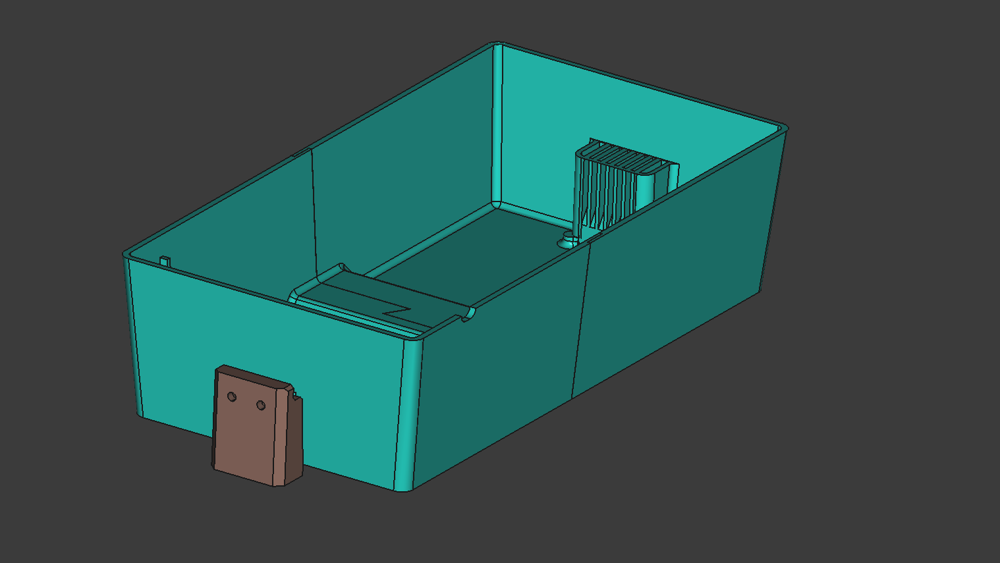

Aquaponics
Intro

The goal of this project was to create a system which allowed me to grow fresh vegetables in my small apartment. Aquaponics uses a symbiotic loop where fish and plants grow together: fish provide natural fertilizer for the plants, and the plants, in turn, filter and clean the water for the fish. This closed-loop ecosystem is not only highly efficient and space-saving, but it also uses about 90% less water than traditional soil gardening. To optimize this miniature ecosystem, I automated its core functions using an Arduino Uno which manages scheduled LED grow lighting and pump timing to ensure consistent plant growth and tank health. The result is a harmonious blend of biology and technology—a compact, self-regulating garden that delivers fresh produce right from my living space.
Frame
The system's structural frame, custom-built from repurposed aluminum extrusion, provides a rigid yet modular foundation for the fish tank, grow beds, lighting, and control electronics. For the grow bed, I designed a two-part model in FreeCAD, which I then 3D-printed, assembled with marine epoxy, and finished with a silicone sealant to ensure it was completely watertight.
Electronics

The entire system is controlled with an Arduino Uno and a custom circuit built on a prototyping shield. The Arduino manages the timing of the water pump and grow lights using a DS3231 RTC module and powers Bridgelux LED light strips via constant-current buck converters. A low-cost USB aquarium pump is actuated using a MOSFET and set on a timer to fill and drain the grow bed.
Future Plans
The current prototype has been working reliably for nearly a year, successfully providing me with fresh vegetables, however I plan several upgrades to improve its performance and maintainability. Converting to an ESP32 microcontroller with WiFi capability, would eliminate the need for a separate RTC module and enable remote configuration and monitoring. Additionally, moving from the breadboard shield to a custom PCB with integrated LED drivers would reduce points of failure and significantly clean up the wiring.